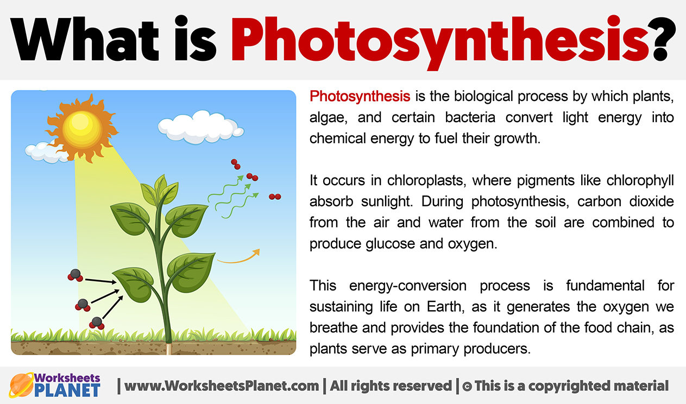
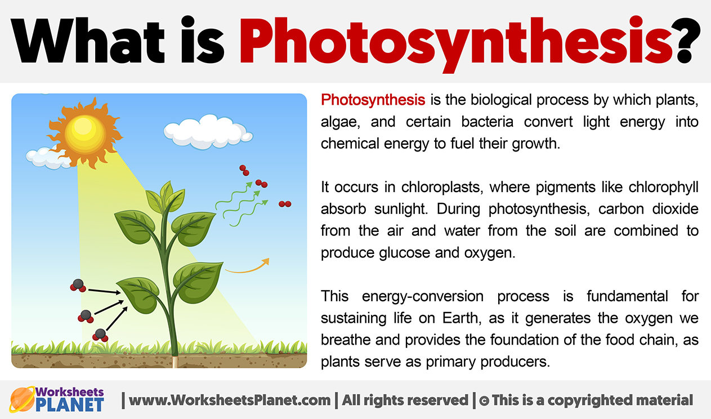

Plants are the eukaryotes that form the kingdom Plantae. This means that they obtain their energy from sunlight, using chloroplasts derived from endosymbiosis with cyanobacteria to produce sugars from carbon dioxide and water, using the green pigment chlorophyll. There are about 380,000 known species of plants, of which the majority, some 260,000, produce seeds.
Most life on Earth depends on photosynthesis.The process is carried out by plants, algae, and some types of bacteria, which capture energy from sunlight to produce oxygen (O2) and chemical energy stored in glucose (a sugar). Herbivores then obtain this energy by eating plants, and carnivores obtain it by eating herbivores.
During photosynthesis, plants take in carbon dioxide (CO2) and water (H2O) from the air and soil. Within the plant cell, the water is oxidized, meaning it loses electrons, while the carbon dioxide is reduced, meaning it gains electrons. This transforms the water into oxygen and the carbon dioxide into glucose. The plant then releases the oxygen back into the air, and stores energy within the glucose molecules.
 
